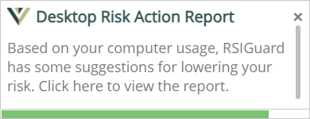
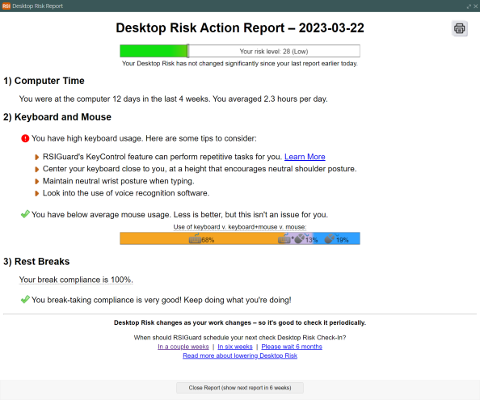

Data menu, and selecting the Desktop Risk Action Report menu item.
Data menu, and selecting the Desktop Risk Action Report menu item.RSIGuard measures your activity level, activity duration, and your rest taking patterns. By comparing your data to a large database of users, RSIGuard estimates your level of risk for developing discomfort. It is important to note that risk from using the computer is also a function of many other factors (for example, workstation setup, posture patterns, other physical activity exposures, stress, environmental factors, and your specific physiology). Nonetheless, how much you use the computer, how you use it, and whether you get sufficient rest are important factors. Read the Desktop Risk white paper
The Action Report is a tool that presents information to you about your current desktop risk (based on the preceding four weeks of measurements). In addition to showing you your risk score, the report also looks at the factors that led to your score, and provides suggested ways you might be able to lower your risk. The report, if enabled, will automatically suggest you take a look at it periodically. When it's time you will see a notification like this:

If you click on the notification, you will see a report like this (of course the information will be different for you):

You can also visit the Desktop Risk Action Report at any time by clicking on the Data menu, and selecting the Desktop Risk Action Report menu item.